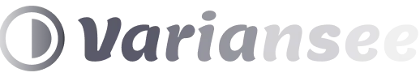
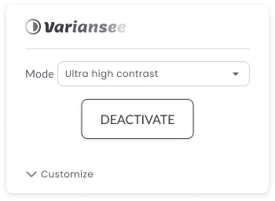
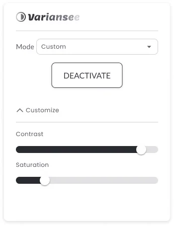
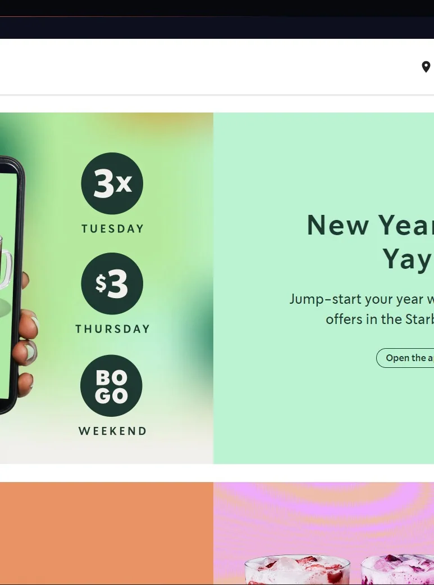
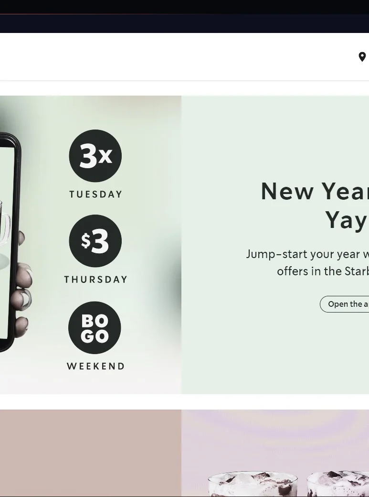
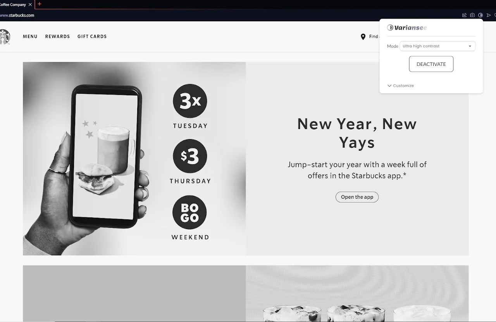
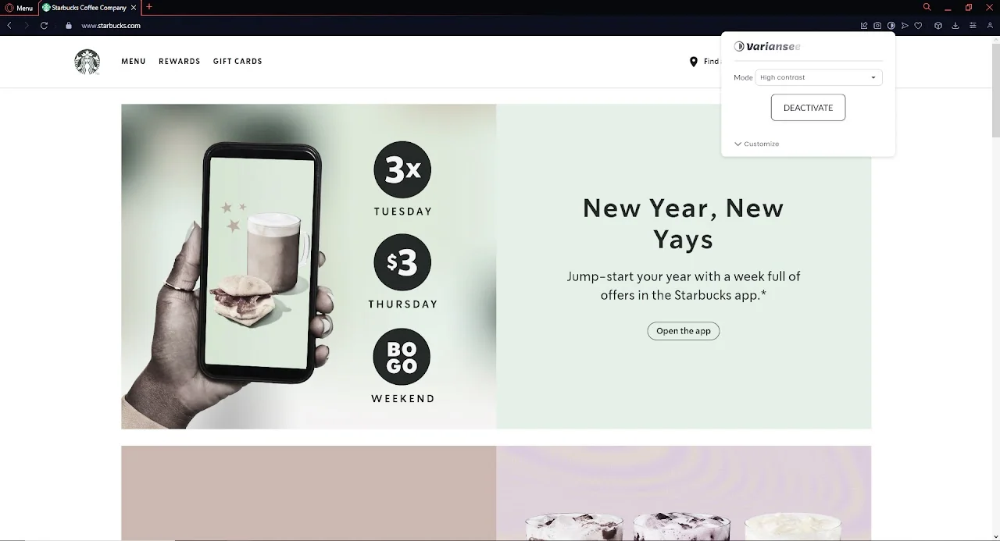
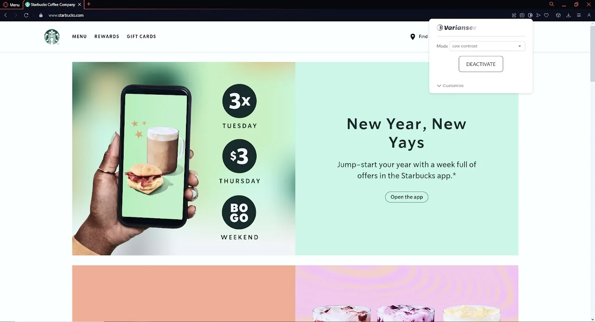
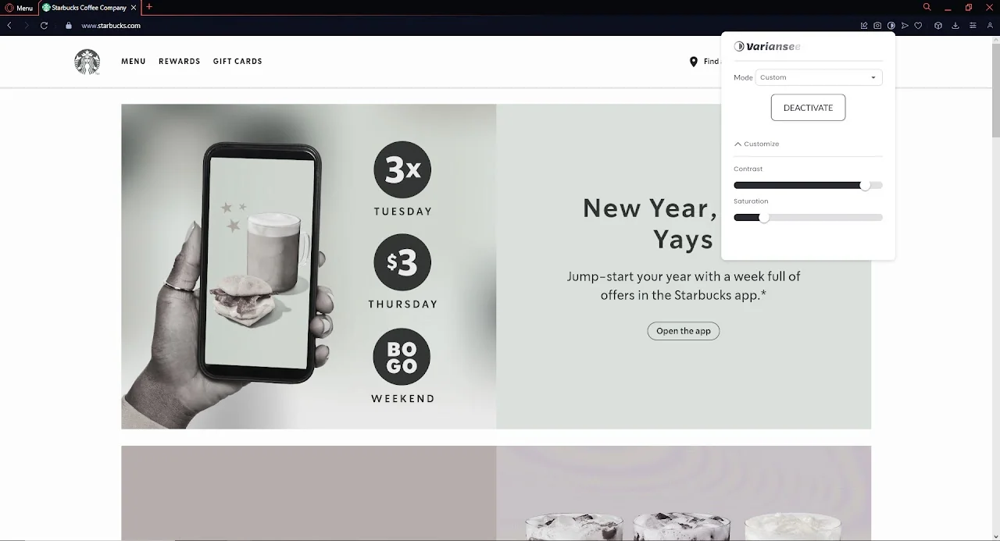

Variansee

The Variansee extension plays an important role in promoting digital accessibility by providing contrast adjustments for web pages. Its importance lies in making online content more readable and easier to understand for colour-blind users and people with visual impairments. In addition to addressing the specific needs of these users, Variansee also improves the experience for a broader audience by allowing personalised contrast adjustments based on different environments and preferences. Therefore, the extension contributes not only to digital inclusion but also to creating a more accessible and user-friendly online environment for everyone.




Element Distinction
Adjusting contrast on web pages is essential for improving accessibility, especially for colour-blind users and people with visual impairments. This adjustment makes it easier to distinguish visual elements such as text and graphics, providing a more effective browsing experience.

The extension offers several preset modes: ultra-high contrast, high contrast, medium contrast, and low contrast. Users can switch between these modes as needed, with changes applied instantly, allowing them to use different settings within the same browsing session.



Customisation
In addition to the presets available in the extension, users can also customise the settings according to their preferences or needs. By expanding the “Customise” section, they can use sliders to adjust the screen’s contrast and saturation in real time.